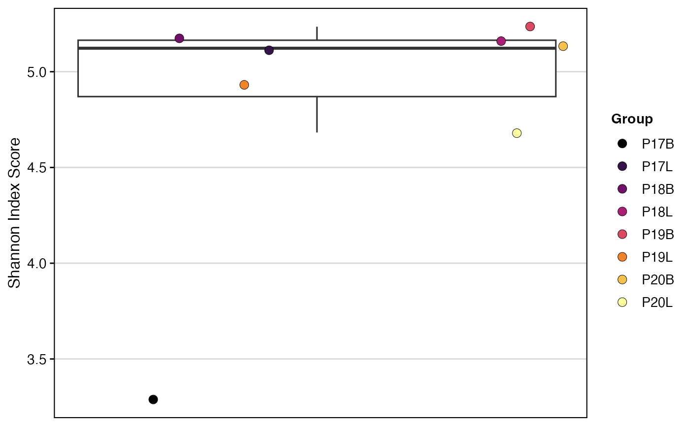
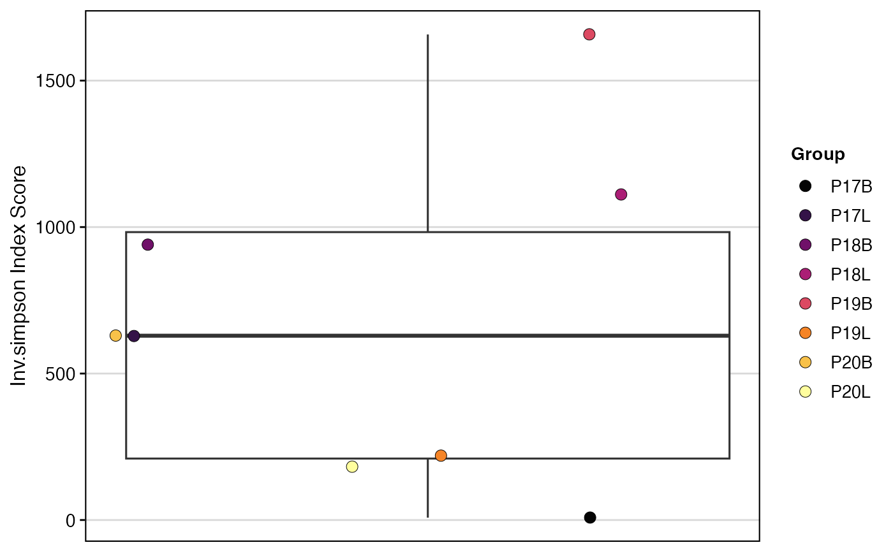

This function calculates a specified diversity metric for samples or groups within a dataset. To control for variations in library size, the function can perform bootstrapping with downsampling. It resamples each group to the size of the smallest group and calculates the diversity metric across multiple iterations, returning the mean value.
Usage
clonalDiversity(
input.data,
clone.call = NULL,
metric = "shannon",
chain = "both",
group.by = NULL,
order.by = NULL,
x.axis = NULL,
export.table = NULL,
palette = "inferno",
n.boots = 100,
return.boots = FALSE,
skip.boots = FALSE,
cloneCall = NULL,
exportTable = NULL,
...
)Arguments
- input.data
The product of
combineTCR(),combineBCR(), orcombineExpression().- clone.call
Defines the clonal sequence grouping. Accepted values are:
gene(VDJC genes),nt(CDR3 nucleotide sequence),aa(CDR3 amino acid sequence), orstrict(VDJC + nt). A custom column header can also be used.- metric
The diversity metric to calculate. Must be a single string from the list of available metrics (see Details).
- chain
The TCR/BCR chain to use. Use
bothto include both chains (e.g., TRA/TRB). Accepted values:TRA,TRB,TRG,TRD,IGH,IGL,IGK,Light(for both light chains), orboth(for TRA/B and Heavy/Light).- group.by
A column header in the metadata or lists to group the analysis by (e.g., "sample", "treatment"). If
NULL, data will be analyzed by list element or active identity in the case of single-cell objects.- order.by
A character vector defining the desired order of elements of the
group.byvariable. Alternatively, usealphanumericto sort groups automatically.- x.axis
An additional metadata variable to group samples along the x-axis.
- export.table
If
TRUE, returns a data frame or matrix of the results instead of a plot.- palette
Colors to use in visualization - input any hcl.pals.
- n.boots
The number of bootstrap iterations to perform (default is 100).
- return.boots
If
TRUE, returns all bootstrap values instead of the mean. Automatically enablesexport.table.- skip.boots
If
TRUE, disables downsampling and bootstrapping. The metric will be calculated on the full dataset for each group. Defaults toFALSE.- cloneCall
![[Deprecated]](figures/lifecycle-deprecated.svg) Use
Use clone.callinstead.- exportTable
- Use
export.tableinstead. - ...
Additional arguments passed to the ggplot theme
Details
The function operates by first splitting the dataset by the specified group.by
variable.
Downsampling and Bootstrapping: To make a fair comparison between groups of different sizes, diversity metrics often require normalization. This function implements this by downsampling.
It determines the number of clones in the smallest group.
For each group, it performs
n.bootsiterations (default = 100).In each iteration, it randomly samples the clones (with replacement) down to the size of the smallest group.
It calculates the selected diversity metric on this downsampled set.
The final reported diversity value is the mean of the results from all bootstrap iterations.
This process can be disabled by setting skip.boots = TRUE.
Available Diversity Metrics (metric): The function uses a registry of metrics imported from the immApex package. You can select one of the following:
"shannon": Shannon's Entropy. Seeshannon_entropy."inv.simpson": Inverse Simpson Index. Seeinv_simpson."gini.simpson": Gini-Simpson Index. Seegini_simpson."norm.entropy": Normalized Shannon Entropy. Seenorm_entropy."pielou": Pielou's Evenness (same as norm.entropy). Seepielou_evenness."ace": Abundance-based Coverage Estimator. Seeace_richness."chao1": Chao1 Richness Estimator. Seechao1_richness."gini": Gini Coefficient for inequality. Seegini_coef."d50": The number of top clones making up 50% of the library. Seed50_dom."hill0","hill1","hill2": Hill numbers of order 0, 1, and 2. Seehill_q.
Examples
# Making combined contig data
combined <- combineTCR(contig_list,
samples = c("P17B", "P17L", "P18B", "P18L",
"P19B","P19L", "P20B", "P20L"))
# Calculate Shannon diversity, grouped by sample
clonalDiversity(combined,
clone.call = "gene",
metric = "shannon")

# Calculate Inverse Simpson without bootstrapping
clonalDiversity(combined,
clone.call = "aa",
metric = "inv.simpson",
skip.boots = TRUE)
